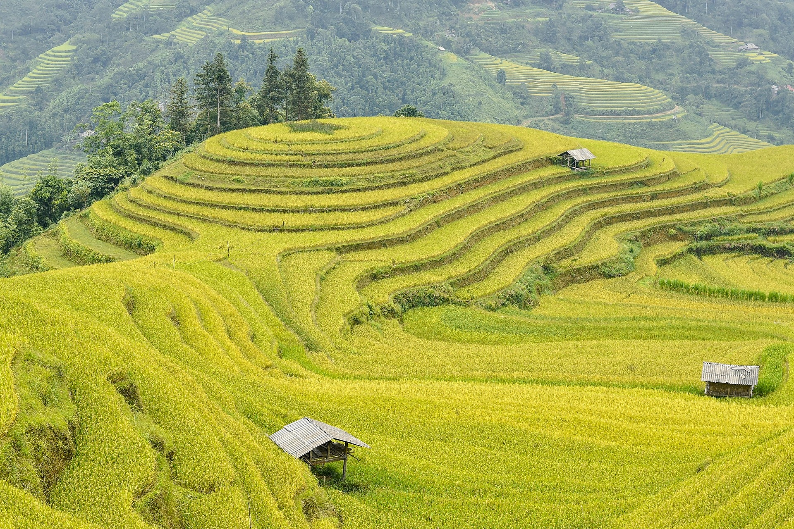

600 Hektare Sawah di Pebayuran Kembali Teraliri Air
Pascakunjungan Menteri Pekerjaan Umum (PU) Dody Hanggodo, sebanyak 600 hektare sawah di Pebayuran, Kabupaten Bekasi, kini mulai teraliri air. Perbaikan saluran irigasi ini menjadi angin segar bagi para petani yang sebelumnya menghadapi kekeringan lahan.
